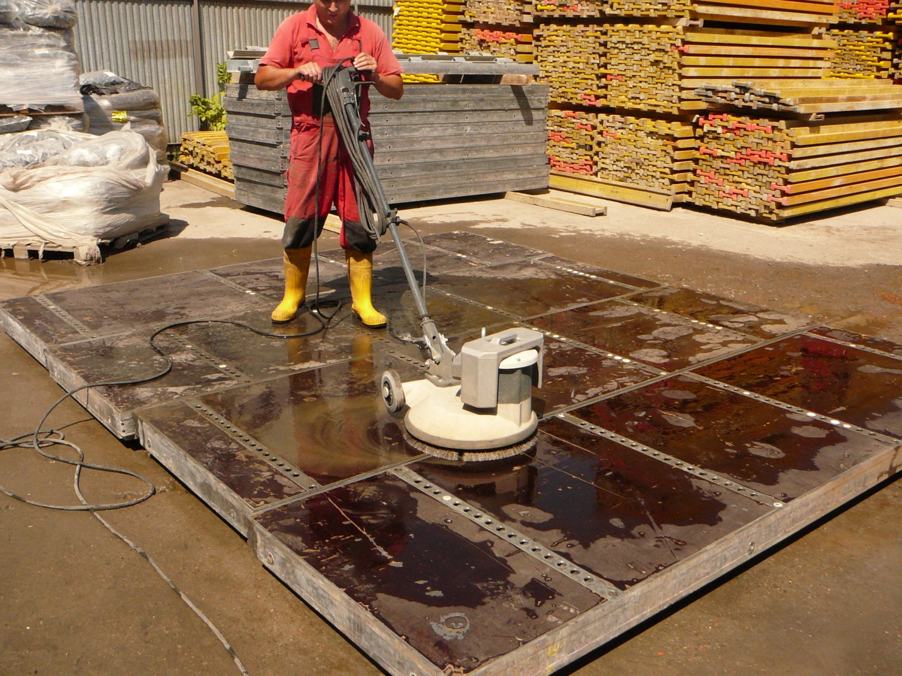
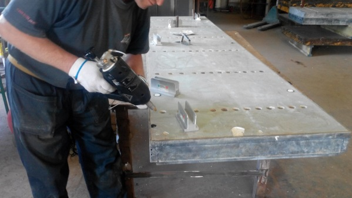
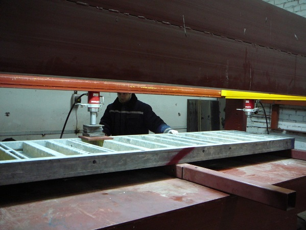
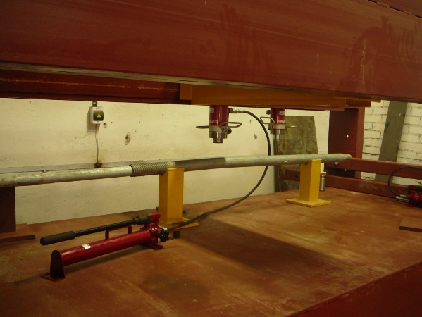

+7(4012)216-377 - тех. отдел
+7(4012)216-529 - приёмная
+7(4012)216-377 - тех. отдел
+7(4012)216-529 - приёмная
Предприятие выполняет все виды ремонта щитовой опалубки и ее элементов, опалубки перекрытий (потолочной), элементов лесов, вышек передвижных, столов каменщика.
При строительстве любых сооружений используется опалубка. В процессе её эксплуатации происходит естественный износ оборудования. Трещины металлическом в каркасе, разрыв сварочных швов, деформации, вмятины, коррозия, нарушение защитных и декоративных покрытий, различные дефекты рабочей поверхности фанерной палубы, следы бетона – всё это необходимо как можно быстрее исправить и восстановить.
От состояния оборудования зависит качество и дальнейшая эксплуатация всего строительного сооружения.
Затраты на восстановление намного ниже стоимости нового комплекта. Ремонт – это простое и выгодное решение! Так вы увеличиваете время жизни вашего оборудования.
Нуждаются в ремонте не только щиты , но и и остальные компоненты: замки, подкосы, кронштейны, тяги, гайки…
После восстановительного ремонта опалубка по своим техническим характеристикам не уступает новым изделиям.
Полный цикл ремонта состоит из следующих операций.
Эта операция выполняется с помощью Моечной установки, развивающей на выходе давления до 500 бар.
Мойка палубы щитов.
Механическая чистка выполняется, ручным электроинструментом.
Заварка трещин в стальном каркасе, восстановление разорванных сварочных швов выполняются полуавтоматической сваркой.
При ремонте алюминиевых каркасов применяется аргонодуговая сварка.
В случаях незначительных дефектов на поверхности фанеры ремонт производится без ее замены. Неглубокие царапины зашпаклевываются, в местах с более глубокими дефектами вклеиваются фанерные кружки, либо выполняется заливка дефектных мест расплавом полимера (с помощью термопистолета).
Замена фанеры производится, когда старая фанера уже не ремонтопригодна.
Герметизация стыков выполняется силиконом, по всему контуру.
Рихтовка щитов (с максимальными габаритами 3300х2400) выполняется на специальном гидравлическом стенде.
Рихтовка прогиба
Рихтовка щита с деформацией «винт»
Рихтовка трубчатых элементов опалубки
Отбраковка и распиловка на меньшие типоразмеры деревянных балок
Ремонт опорных стоек на специальном многооперационном гидравлическом станке, который позволяет выполнять разборку телескопических стоек, их правку для устранения прогибов, а также выправлять вмятины в трубчатых деталях.
По ремонту лесов выполняются работы по устранению дефектов, накапливающихся в процессе эксплуатации: нарушения геометрии рам, размеров элементов, трещины и расслоения, местные деформации, изгибы стоек, ригелей и связей, разрывы сварочных швов. Такие дефекты возникают, в основном, в результате неправильной эксплуатации на строительных объектах.
Рихтовка рам лесов на гидростенде
По ремонту Вышек передвижных возможности предприятия позволяют выполнять как частичный ремонт, так и полное изготовление по заказам клиентов.
По Столам каменщика предприятие выполняет весь комплекс ремонтно-восстановительных работ, а также изготовление их вновь.
Спасибо, мы Вам перезвоним в ближайшее время.